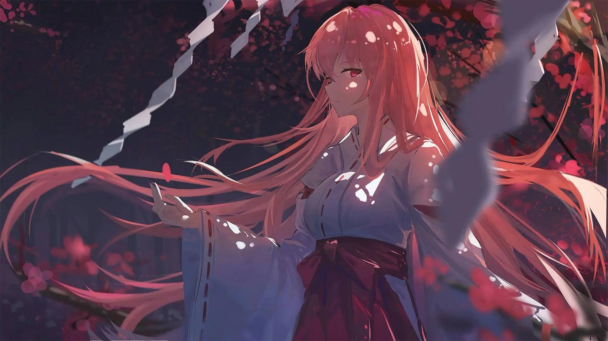
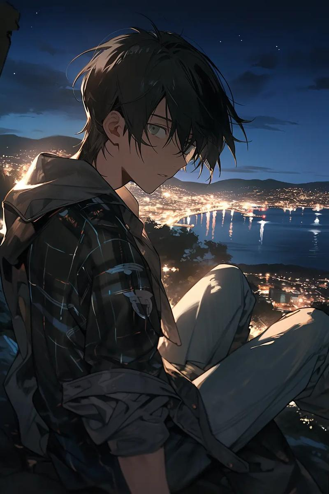
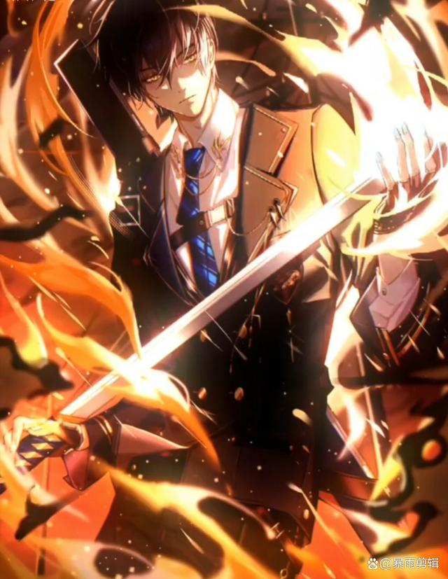
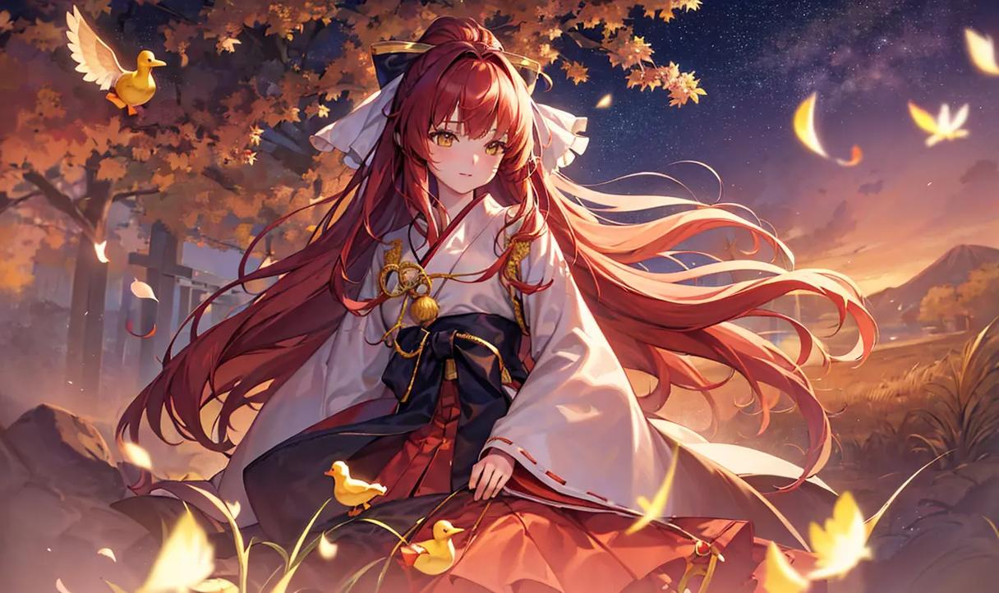

回到首页 主要人物 经典故事 手法及情节分析 读者反响

诺诺：
学生会组织部璀璨明星，以A级血统傲视群英。身为曼斯与曼施坦因教授的高徒，她宛如古灵精怪的“红发小女巫”，自诩无言灵却疑似隐藏惊世之谜。天赋异禀，擅长“侧写”之术，洞悉过往，仿佛历史在她指尖轻舞。外表冷艳，内心却对粉红色小物情有独钟，性情如风，时而威严师姐，时而娇俏少女。面对未知，她勇敢无畏，好奇心旺盛，誓以己身探索世界每一个角落。与恺撒并肩，她不仅是伴侣，更是唯一能与之并肩作战的灵魂伴侣，那句“我会罩你”是她的承诺，也是她无畏前行的宣言。

路明非：
路明非有着不折不扣的“废柴”个性，爱吐槽，时不时会蹦出一句烂话，平时做事衰到极点，因龙血产生的“血之哀”无法融入群体，在生活中常常感到敏感、孤独、不自信。十八岁前是一名再平凡不过的少年，寄宿在叔叔婶婶家里，经常被忽视。最擅长的是打游戏，理想小到只是看报摊。在十八岁时，却因血统被评定为“S”级而收到卡塞尔学院的邀请，从此来到了龙的国度，开启了新世界的大门。
路明非和自称是他弟弟的“小魔鬼”路鸣泽签订交换生命的契约，以获得每次濒死的重生，并借得以力斩杀龙族。在经历斩杀康斯坦丁 [12]、斩杀诺顿 [8]、斩杀芬里厄 [7]、上杉绘梨衣之死 [20]、斩杀白王 [18]、奥丁之战 [23]，并找到消失的楚子航后，逐渐明白自己才是这个世界上最大的怪物，为了追寻自己身份的真相而前往黑天鹅港，寻找自己的墓

楚子航：
学习成绩优异。实力与学生会前任主席恺撒·加图索实力不分高下。拥有着高危言灵·君焰，血统在习得禁术“爆血”后得到提升到超A级，却也因副作用而离死不远，在经过耶梦加得的龙血洗礼后稳定了血统。
十五岁的楚子航在中学时期的一个雨夜与楚天骄误入了尼伯龙根遭遇奥丁留下了烙印，为了追寻父亲的秘密而主动找到了卡塞尔学院。后遇见了伪装成人类夏弥的大地与山之王耶梦加得，在其身份暴露后将其杀死得到了龙血洗礼。在日本行动后毕业进入执行部，在进入阿瓦隆尼伯龙根后失踪，被奥丁俘获并篡改其人生。除路明非及路鸣泽一行人外，没有人记得他的存在。后被其生母苏小妍记起。戴上奥丁面具后在与路明非的交战中摆脱控制但失去了记忆，与路明非和诺诺一起逃亡，后被苏茜记起，为了帮助路明非和诺诺从不朽者中脱困再次戴上面具成为奥丁，后奥丁面具损坏。与路明非和乌鸦为了诺诺安全将诺诺交给蛇岐八家，等待恺撒接回，与路明非前往黑天鹅港。

上杉绘梨衣：
上杉绘梨衣是赫尔佐格用前任影皇上杉家主上杉越的基因制造出来的试管婴儿，与源稚生及源稚女（风间琉璃）为兄妹关系。被称作月读命（伪）。言灵杀伤力极其强大，但不愿意伤害任何人，心思非常单纯，性格温顺，天然呆。
21岁时遇到了生命中的第一束光——路明非，自此整个世界被他填满，深爱着这个给了自己温暖和自由的男孩。
心智不够成熟，无法凭借自己的意识完全控制言灵（“审判”在龙族文字中意为“死亡”，发动话语仅限龙文或言灵），容易暴走。开口说出的语言最多也只是龙语言灵，但声线动听，保持沉默久了又会被误以为是哑巴。是白王圣骸最完美的寄主，但同时也是一个命运极其悲苦凄惨的女孩。